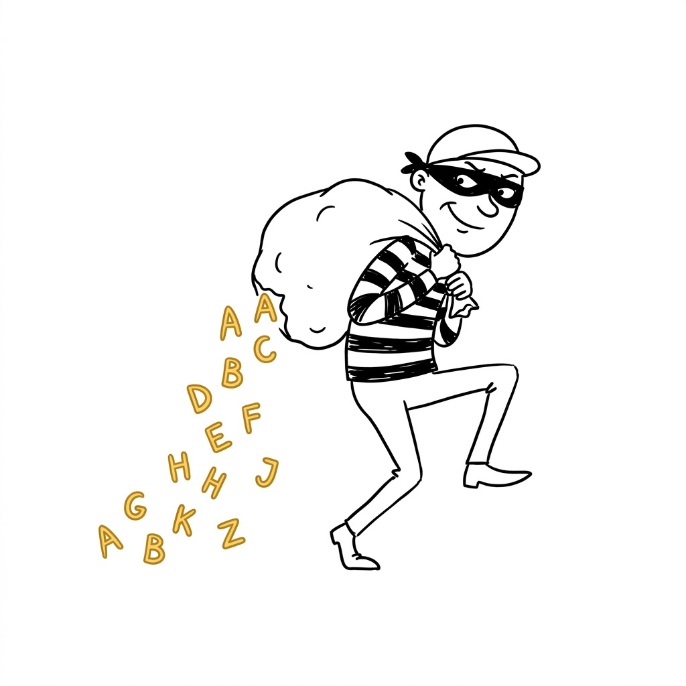
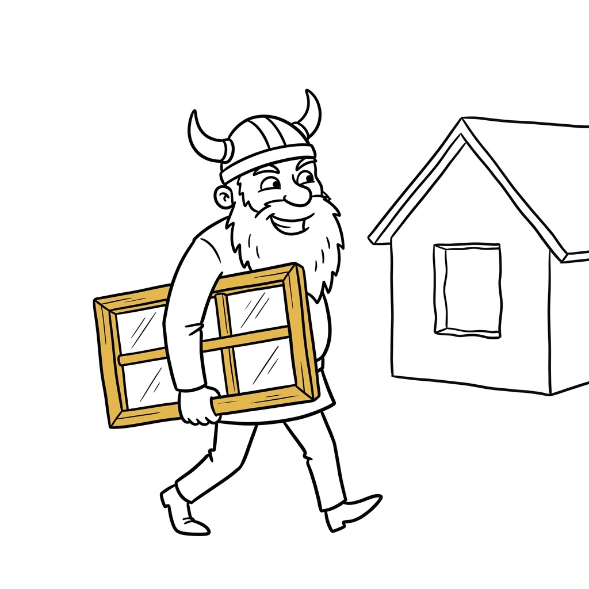
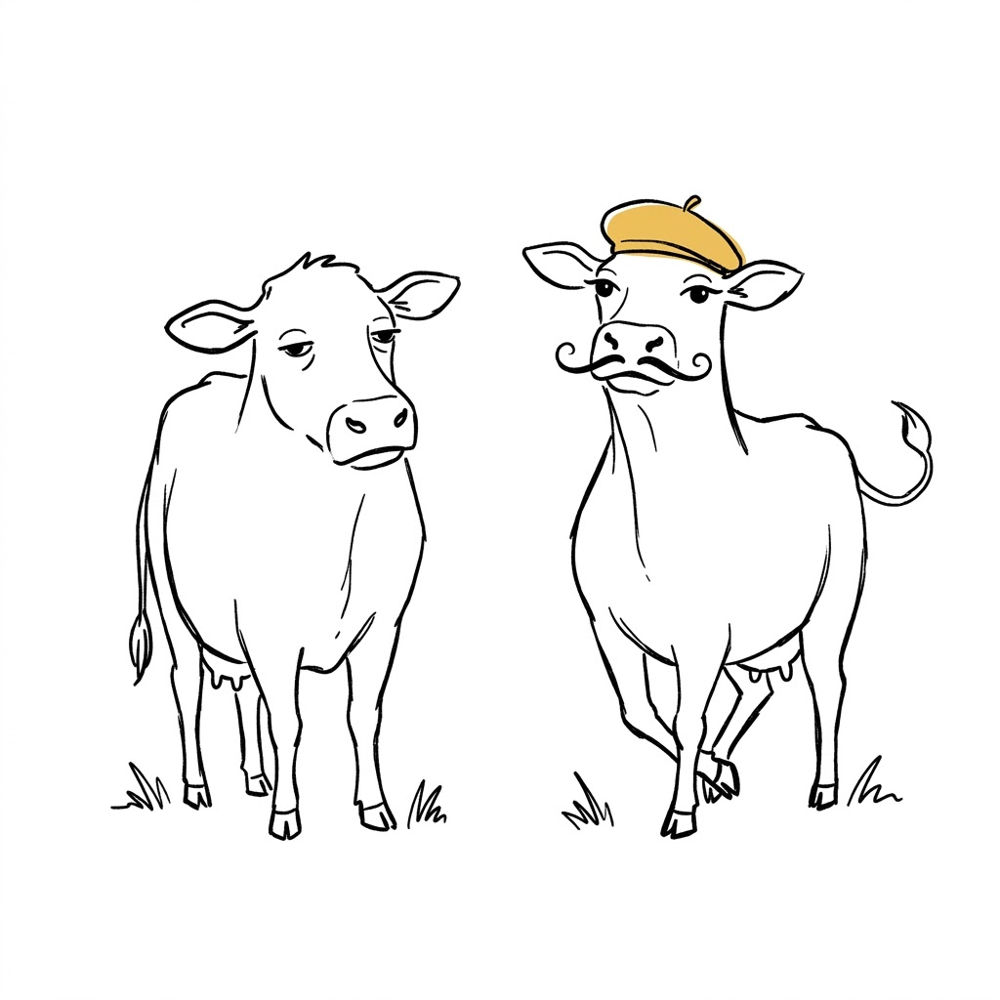
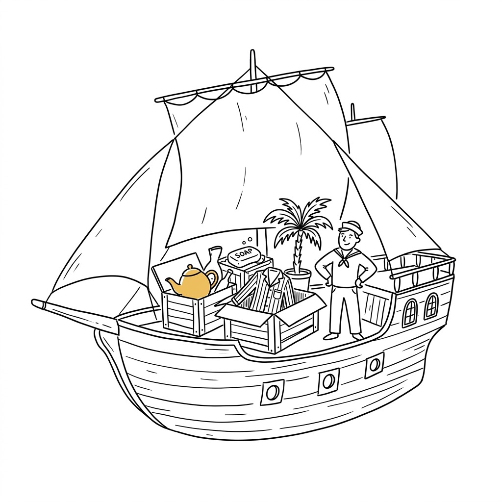
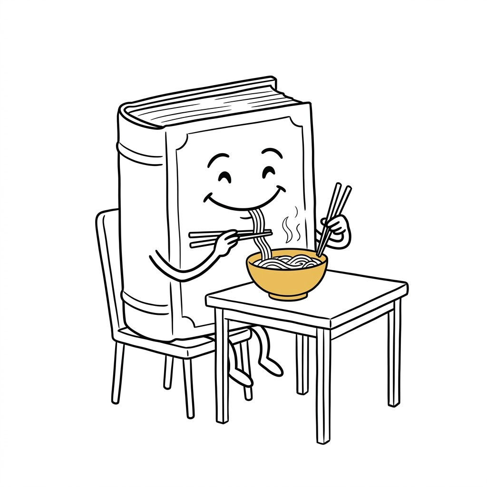
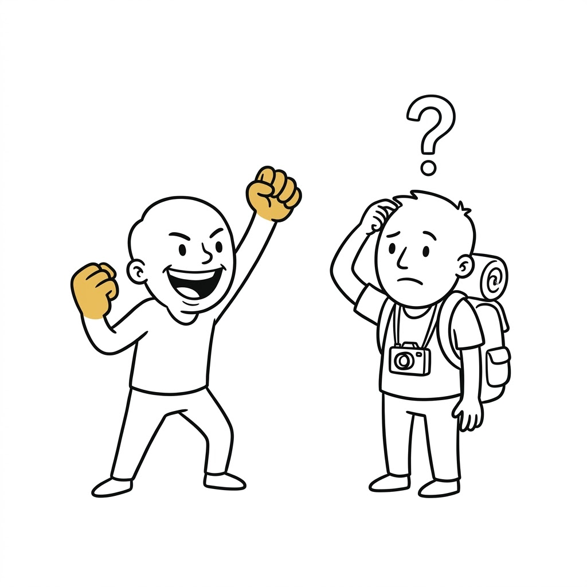
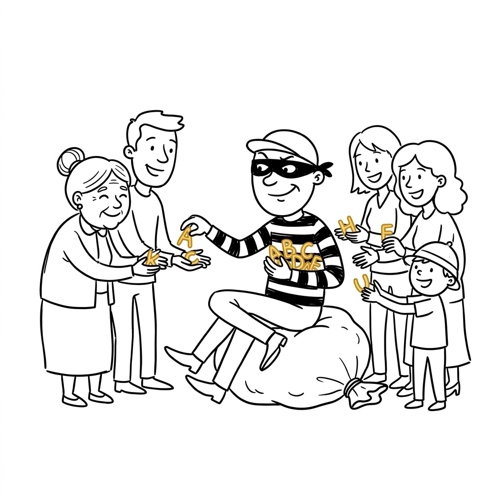

Where do English words really come from?
Global English · group presentation · 9/14
허성윤 · 윤예원 · Max Aulinger
press → to start · F = fullscreen

the question
But how many of them are really English?
the answer
Where the words in a big English dictionary come from.
Numbers: Finkenstaedt & Wolff, Ordered Profusion (1973), about 80,000 words.
But careful: the words we use every day — the, is, man, water — are still the old English ones.
English borrowed the big vocabulary, not the basics.
where english comes from
It starts north of the Black Sea, about 6,500 years ago.
From there it spread across Europe and India — that is why English and Hindi are distant cousins. English itself was born Germanic: that line is the 25% from the slide before.
one sentence, one thousand years
Same sentence, same language.
But Old English needs a translation.
the crime scene
Black box = the original English. Everything else came later. Dates are roughly when the words arrived — not to scale.
the reason behind it
Whenever English speakers met new people, English picked up their words.
So let’s look at how that happened — starting with Latin.
theft no. 1 · 600, and again 1500
Christian missionaries came to England. They taught and wrote in Latin, and the words stayed.
New discoveries needed new words. Nobody invented them — they took Latin again.
Latin is 28% of English — almost a third of the dictionary.
We just stopped noticing.
theft no. 2 · 800–1000
They attacked England for 200 years, and then they lived there. The two languages mixed. English kept their words:
window is Old Norse vindauga — “wind-eye”. A hole for the wind.
And English also took these:
Most languages never borrow words like this. English did.

theft no. 3 · 1066
William the Conqueror wins. For the next 300 years the kings of England speak French. The farmers keep speaking English.
| in the field — English | on the table — French |
|---|---|
| cow | beef |
| pig | pork |
| sheep | mutton |
| deer | venison |
The poor kept the animals. The rich ate them.
1,000 years later we still use both words.

theft no. 4 · 1600–1900
British ships sailed everywhere. They came home with tea, cotton — and words.
This is how English became a world language.
Not because it is easy — because of ships and power.

quiz
click a word to see the answer
and today?
September 2021: the Oxford English Dictionary added 26 Korean words at once.
1,000 years ago it was the Vikings.
Today it is Korea.

the other direction
Some of these an American could guess.
But skinship? Or fighting! — no chance.
50 million Koreans know exactly what they mean.
So — is this wrong English? Or is it just Korean English?

English is a thief.
That is exactly why it belongs to everybody.
Thank you. Any questions?

sources